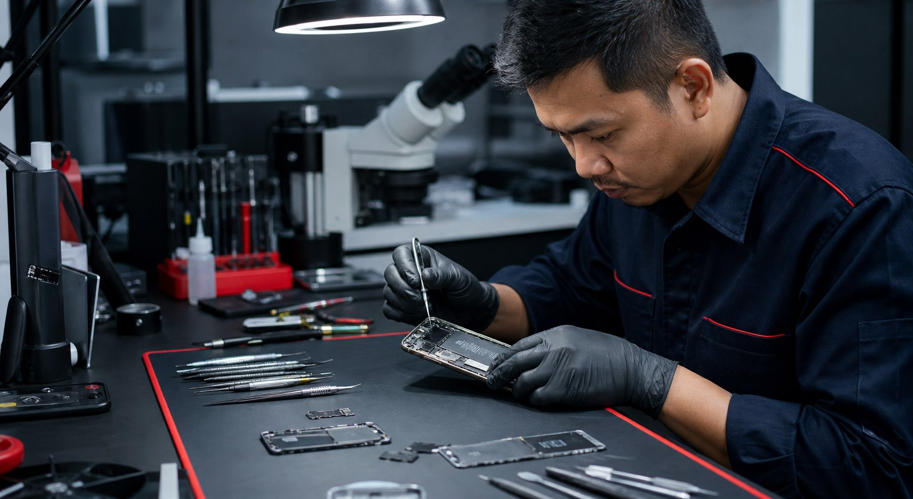
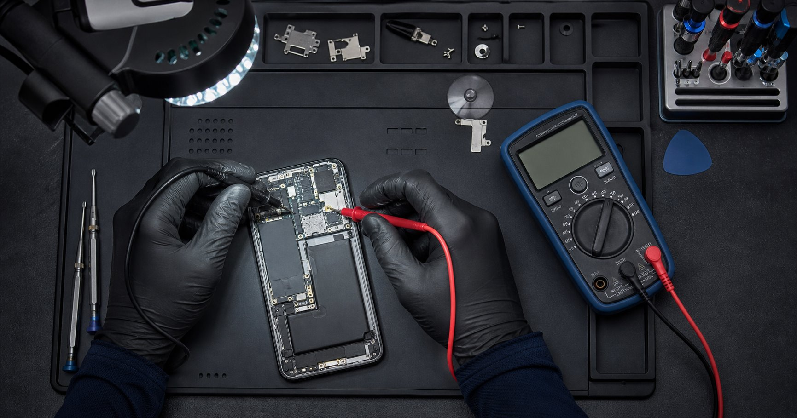
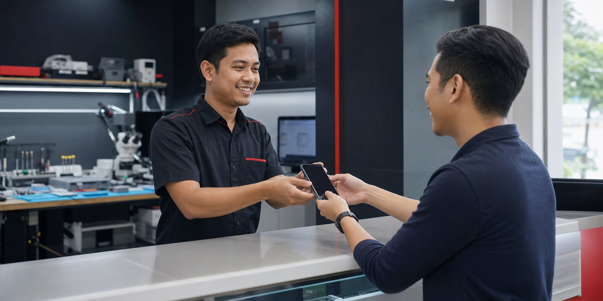

Layar dan display
Layar bergaris, pecah, redup, atau touch tidak responsif.
Service Handphone Cepat, Aman & Bergaransi
Terima service, pantau diagnosa, ikuti pengerjaan, dan cek kapan perangkat siap diambil dengan nomor resi.
7
Tahap status
6
Hari operasional
1
Kontak WhatsApp
Jenis layanan umum
Pemeriksaan dimulai dari keluhan dan kondisi perangkat. Rekomendasi perbaikan diberikan setelah teknisi memahami bagian yang bermasalah.

Layar bergaris, pecah, redup, atau touch tidak responsif.
Baterai boros, perangkat panas, port longgar, atau gagal mengisi.
Gangguan sistem, aplikasi berat, gagal update, atau perangkat berulang restart.
Korosi, kamera, speaker, mikrofon, dan komponen board diperiksa menyeluruh.
Proses service
Setiap perubahan dicatat dengan waktu, aktor, dan ringkasan agar pelanggan memahami posisi perangkatnya.

Terima
Admin mendokumentasikan perangkat, kelengkapan, dan kondisi fisik awal.
Diagnosa
Teknisi menguji komponen dan menyusun estimasi tindakan yang diperlukan.
Perbaikan
Perbaikan dan pemakaian sparepart dicatat pada riwayat service.
Siap diambil
Pelanggan melihat status akhir dan mengambil perangkat di lokasi.
Keunggulan operasional
Pelanggan mendapat progres yang mudah dipahami, sementara admin dan teknisi bekerja menggunakan catatan service yang sama.
Setiap status selalu disertai teks dan tindakan berikutnya.
Biaya dibedakan antara estimasi awal dan total final.
Nama, WhatsApp pelanggan, dan IMEI tetap ditampilkan dalam bentuk masking.
Pelanggan cukup menggunakan nomor resi yang diterima saat service.

Status flow
Urutan canonical dipakai konsisten pada tracking pelanggan, dashboard admin, pekerjaan teknisi, dan laporan.
7status canonical
Menunggu sparepart adalah tahap opsional sesuai kebutuhan komponen.
Testimoni dummy
Data berikut hanya untuk review prototype dan bukan klaim ulasan nyata.
FAQ
Informasi singkat sebelum perangkat masuk, selama pengerjaan, dan saat pengambilan.
Gunakan nomor resi dengan format PMD-YYYYMMDD-0000 yang diberikan saat service diterima.
Biaya awal adalah estimasi. Total final dikonfirmasi setelah diagnosis dan pengerjaan selesai.
Perbaikan tertahan karena komponen service sedang disiapkan atau belum tersedia.
Prototype ini memakai data lokal di browser untuk simulasi tampilan, bukan sinkronisasi server.
Tidak. Nama pelanggan, nomor WhatsApp pelanggan, dan IMEI dimasking pada halaman tracking publik.
Kontak dan lokasi
Hubungi kami untuk konsultasi awal atau datang langsung ke lokasi service.
Jl. Teluk Bayur, Kelurahan Kleak, Kecamatan Malalayang, Kota Manado, Sulawesi Utara
Senin-Sabtu, 09.00-20.00 WITA
+62 821-9008-7876
Tanya melalui WhatsApp